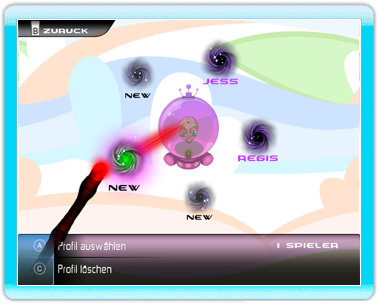
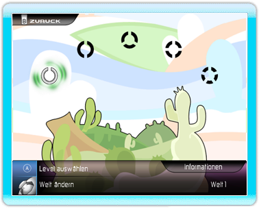

Profilauswahl

• Wählen Sie ein Profil aus, indem Sie darauf zeigen und den A-Knopf drücken.
• Löschen Sie ein Profil, indem Sie darauf zeigen und den C-Knopf drücken
• Wählen Sie "NEW" aus, um ein neues Profil zu erstellen.
Welt- / Levelauswahl

• Wählen Sie eine Welt aus, indem Sie auf eines der 5 Symbole zeigen und zur Bestätigung den A-Knopf drücken.
• Wählen Sie eine Welt aus, indem Sie den Control Stick von links nach rechts bewegen.
• Sie können nicht zu den Leveln in schwarz gelangen, wenn Sie nicht genug Punkte haben: Sie müssen dafür mehr Medaillen gewinnen. Sie werden automatisch entsperrt, wenn Sie genug Punkte haben!
• Klicken Sie auf die Schaltfläche "Informationen", um sich Informationen bezüglich Ihrer Punkte und Medaillen anzeigen zu lassen.
• Bewegen Sie Ihren Cursor über ein gesperrtes Level, um herauszufinden, wie viele Punkte Sie brauchen, um es zu entsperren.